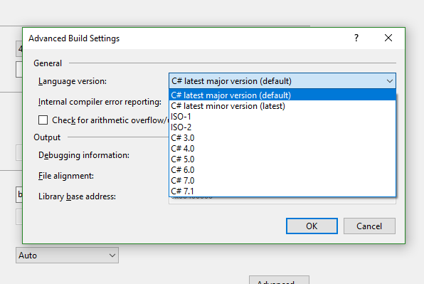

Which version of C# am I using
I want to find out which version of C# I'm using. If I would be using python I
would do something like python -V from the command line, or type:
import sys print sys.version
In PHP I would do something like this: phpinfo(); in java: java -version
But I was not able to find how to achieve this in C#.
This question does not answer it, although the name suggests that it should.
I got that it depends on the .NET framework, but is there a programmatic way of figuring out my framework? I mean without going to the directory and checking the name of my .NET folders.
Answer
To get version of framework - look at version of one of main Assemblies i.e.
Console.Write(typeof(string).Assembly.ImageRuntimeVersion);
Getting version of C# compiler is somewhat harder, but you should be able to guess version by checking what framework version is used.
If you are using command line compiler (csc.exe) you can check help to see version (also you'd need to know Framework version anyway:
C:\Windows\Microsoft.NET\Framework\v4.0.30319>csc /? Microsoft (R) Visual C# 2010 Compiler version 4.0.30319.1
Suggest
While this isn't answering your question directly, I'm putting this here as google brought this page up first in my searches when I was looking for this info.
If you're using Visual Studio , you can right click on **your project -
Properties -> Build -> Advanced** This should list available versions as well as the one your proj is using.
